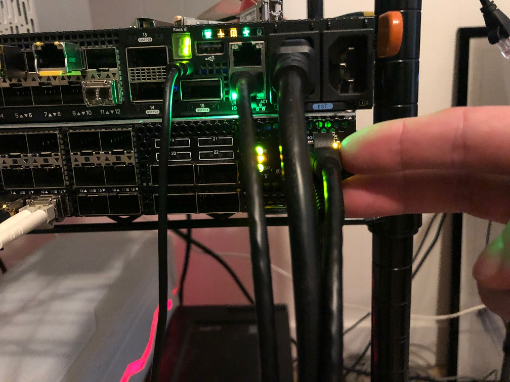

Load Balancing on Mellanox Switches
In this test case the goal is to create a simple load balancer using a reverse LAG port. The idea is to have one input port which is then mirrored to a logical LAG port and at the other end of the LAG port is a number of security sensors.
Version Info
mellanox.lan [standalone: master] # show version
Product name: Onyx
Product release: 3.8.2004
Build ID: #1-dev
Build date: 2019-09-23 14:19:47
Target arch: x86_64
Target hw: x86_64
Built by: jenkins@7ae5fd122b61
Version summary: X86_64 3.8.2004 2019-09-23 14:19:47 x86_64
Product model: x86onie
Host ID: B8599FD560BE
System serial num: MT1940T00588
System UUID: 5f4c5ed2-e60b-11e9-8000-b8599f7f6f40
Uptime: 17h 27m 36.480s
CPU load averages: 3.17 / 3.17 / 3.11
Number of CPUs: 4
System memory: 2738 MB used / 5065 MB free / 7803 MB total
Swap: 0 MB used / 0 MB free / 0 MB total
Connect to the Console Port and Management Ethernet Port
Plug in both the management Ethernet cable and the serial cable. The console port is the bottom port and the ethernet management port is the top port.

I had to plug the console cable into a specific USB slot on the server. It didn't work in the first one I tried. See picture below.

This likely has nothing to do with the Mellanox switch itself, but as a note for those that come after you may want to try different USB ports if you find you aren't getting output on the first one you try and are confident you have the correct settings.
I used the following console configuration:
Baud Rate: 115200
Data Bits: 8
Stop Bits: 1
Parity: None
Flow Control: None
Update to Latest Version of MLNX-OS
- I pulled updates here
- The system uses a web server target for updates. I had Apache running on a RHEL 8 box.
- Download the update file and then upload it to your web server's root directory.
-
On the switch itself (over a console port) do the following:
switch > enable switch # configure terminal switch (config) # show images # Delete the old image if it exists. It will be under # "Images available to be installed" switch (config) # image delete <old_image>-
Download the new image from your web server with
mellanox.lan [standalone: master] # image fetch http://rhel8.lan/onyx-X86_64-3.8.2004.img 100.0% [################################################################################################################################################################################################################################################################]
-
-
Next install the updated OS with:
mellanox.lan [standalone: master] # image install onyx-X86_64-3.8.2004.img location 2 progress track verify check-sig Step 1 of 4: Verify Image 100.0% [#################################################################] Step 2 of 4: Uncompress Image 100.0% [#################################################################] Step 3 of 4: Create Filesystems 100.0% [#################################################################] Step 4 of 4: Extract Image 98.6% [################################################################ ] 100.0% [#################################################################] -
Now set the switch to load from the new operating system and reload:
mellanox.lan [standalone: master] # image boot next mellanox.lan [standalone: master] # reload
Physical Configuration
I used the following port configuration:
- 1, 1Gb/s copper SFP (Eth1/1) for input
- 2, 1Gb/s copper SFPs (Ethernet 1/1/5/Ethernet 1/1/9) and 1, 1Gb/s, fiber SFP (Ethernet 1/1/12) for output
I used the following optics:

Connect the input port to port 1.
I connected my output ports in the following way:

Bringing the Interfaces Up
Mellanox does not perform testing with 3rd party NICs. During testing we found that autonegotiation of speed will not work on standard Dell SFPs. Use the below command on each interface to set the speed manually:
mellanox.lan [standalone: master] (config interface ethernet 1/1) # speed 1G
Configure the LAG
Initial Configuration
mellanox.lan [standalone: master] (config) # port-channel load-balance ethernet source-destination-mac source-destination-ip source-destination-port symmetric
mellanox.lan [standalone: master] (config) # interface port-channel 1
mellanox.lan [standalone: master] (config interface port-channel 1) # switchport mode hybrid
mellanox.lan [standalone: master] (config interface port-channel 1) # description load balance group
mellanox.lan [standalone: master] (config interface port-channel 1) # no shut
mellanox.lan [standalone: master] (config interface port-channel 1) # mtu 9000 force
mellanox.lan [standalone: master] (config interface port-channel 1) # exit
mellanox.lan [standalone: master] (config) # interface ethernet 1/5 switchport mode hybrid
mellanox.lan [standalone: master] (config) # interface ethernet 1/9 switchport mode hybrid
mellanox.lan [standalone: master] (config) # interface ethernet 1/12 switchport mode hybrid
mellanox.lan [standalone: master] (config) # interface ethernet 1/1 switchport mode hybrid
mellanox.lan [standalone: master] (config) # interface ethernet 1/1 mtu 9000 force
mellanox.lan [standalone: master] (config) # interface ethernet 1/5 mtu 9000 force
mellanox.lan [standalone: master] (config) # interface ethernet 1/9 mtu 9000 force
mellanox.lan [standalone: master] (config) # interface ethernet 1/12 mtu 9000 force
mellanox.lan [standalone: master] (config) # interface ethernet 1/5 channel-group 1 mode on
mellanox.lan [standalone: master] (config) # interface ethernet 1/9 channel-group 1 mode on
mellanox.lan [standalone: master] (config) # interface ethernet 1/12 channel-group 1 mode on
Problem Using Port Mirroring
Originally my plan was to use a mirror port to send all the traffic from port 1 to our LAG interface. In contrast to OS10, MLNX-OS will not allow you to do this. The problem is that MLNX-OS will not allow you to create a mirror session from interface 1 to the LAG port which prevents this configuration from working. Moreover you cannot access the Linux command line to use a utility like tc to perform the config either.
Configure OpenFlow
Instead of using port mirroring to send the traffic from interface one we can instead use a static OpenFlow configuration to redirect the traffic.
mellanox.lan [standalone: master] (config) # interface ethernet 1/1 openflow mode hybrid
mellanox.lan [standalone: master] (config) # interface port-channel 1 openflow mode hybrid
mellanox.lan [standalone: master] (config) # openflow add-flows 1000 priority=50,in_port=Eth1/1,actions=output:Po1
Findings
The Mellanox SN2010 works correctly and will appropriately load balance full sessions across each member of the LAG. See below for screenshots.
Host 1
Host 2

Host 3